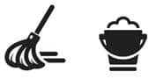

Ne biçim bir şey bu hijyen!
Hijyennn… Hayatımıza mikrop gibi girip yapışmış enteresan bir kelime. Bir sabah arkadaşım Neslihan’ı işe bırakıyordum. Keyifli, çok keyifli bir sabahtı. Yolda giderken mevzu çocukların hastalıklarına geldi dayandı.
Neslihan dedi ki, çocuklar ne kadar sık hasta oluyorlar artık. Benim çocukluğumda bizim sınıfta bir kız bademcik ameliyatı olmuştu, çok şaşırmıştık. Şimdi bu durum, ne kadar normal algılanıyor ve ne kadar sık yaşanıyor.
Eee, dedim, büyüme tarzlarımız aynı değil. Şimdi çocuklar dış dünyayla kreşe başladıklarında tanışıyorlar. Bizim çocukluğumuz böyle değildi. Akşama kadar sokakta oynuyorduk. Yere düşen bir bisküviyi üfleyerek yiyebiliyorduk. Bunlar bizim bağışıklığımızı güçlendiriyormuş demek ki…
Sonra konu eski zamanlarda olup da şimdi yapılması dehşetle karşılanan hareketlere geldi. Bak şimdi hatırlayınca sen de dehşete düşeceksin.
- Hijyenden önceki dönemlerde anneler yere düşen emziği, ağızlarına sokup çıkartıp bebeklere öyle veriyorlardı. Böylece emziği temizlediklerine inanıyorlardı.
- Hijyenden önceki dönemlerde, yine anneler, çiğneme yeteneği gelişmemiş çocuklara katı gıdaları, ağızlarının içinde çiğneyip yumuşatarak veriyorlardı.
- Bu çağlarda çocuklar, anneleriyle her hafta bir kez güne gidiyor ve onlarca kadın tarafından ıslak ıslak öpülüyordu.
- O dönemlerde çekilen fotoğraflar gösteriyor ki, yemek masalarına, masanın her başına birer tane olmak üzere sadece iki su bardağı konuyordu ve aynı bardağı birkaç kişi kullanabiliyordu! Dahası aynı tabaktan yemek yenebiliyordu.
- Sıvı sabun diye bir şey yoktu. Lavaboda duran ıslak kalıp sabunla eller yıkanıyordu. Ve çocuğun arkasından banyoya giren anneler, sabunun hala kuru olduğunu görüp, ellerini sabunlamamış çocuğu kolayca zımbalayabiliyorlardı.
Neyse ki bunlar hijyen öncesi çağlarda yaşanan şeylerdi ve biz ölmeden bugünlere erişebildik. Hijyen konusunda çok takıntılı olmasam da zaman zaman çağa ayak uydurdum. Buyurun size hijyen manyağı annenin hayatta kalma rehberi… İşaretleniş kutucuklar benim de yaptıklarım. Diğerlerini yapmadım galiba, yapmış da olabilirim, ama yapmamaya dikkat etmişimdir, belki de yapmışımdır, bir gün yapıp bir gün yapmamışımdır. (En azından çocuğu öptürmeme işini yapmadım. Tuna geçenlerde öpücük hastalığı diye bir hastalığa yakalandı. Bir boyun ultrasonu istediler. Sırada beklerken yanımızda oturan kadın, Tuna’yı kucağına alıp belki on kere öptü. Sonra kadın, çocuğun neyi var diye sordu. Öpücük hastalığı dedim! Aaaa, onu nerden bulmuş, dedi. Bilin bakalım, demek istedim, ama diyemedim.)
Hijyen Manyağı Annenin Hayatta Kalma Rehberi
Biberon, bebek kaşığı, mama tabağı gibi mutfak gereçleri için bebeklere özel bulaşık deterjanları var. Onlardan al. Bulaşık makinesine koymayacaksın tabii ki, elde yıkayacaksın. Her koşulda, bol su ile durulayacaksın.
 Yetmez. Kaynatacaksın. Üşeniyorsan, sterilazatör müthiş bir alet. Ondan alacaksın.
Yetmez. Kaynatacaksın. Üşeniyorsan, sterilazatör müthiş bir alet. Ondan alacaksın.
 Bebekle birlikte girdiğin her odaya bir tane el dezenfektanı koyabilirsin. Ben alt açma sepetinin içine koymuştum bir tane. Önce ellerimi dezenfekte edip arkadaşın kıçına öyle dokunuyordum. Gerçi o tepemize sıçarken aynı nezaketi göstermiyor ama neyse.
Bebekle birlikte girdiğin her odaya bir tane el dezenfektanı koyabilirsin. Ben alt açma sepetinin içine koymuştum bir tane. Önce ellerimi dezenfekte edip arkadaşın kıçına öyle dokunuyordum. Gerçi o tepemize sıçarken aynı nezaketi göstermiyor ama neyse.
Çamaşırlar için elbette ki granül sabun kullanıyor, kuruduktan sonra ütülüyoruz. Yansın mikroplar, yansın kavrulsun.
 Hijyen manyağı anne için dünyanın en pis yeri halılardır. Saç kılları var, deri döküntüleri var, maytlar var… Ya her ay halıları yıkamaya göndereceksin, ya elinde halı fırçasıyla gezeceksin ya daaaa halının üstüne kumaşçıdan kumaş kestirip sereceksin. Böylece her hafta kumaşı makineye atar, yıkar, serersin. Ohh mis gibi.
Hijyen manyağı anne için dünyanın en pis yeri halılardır. Saç kılları var, deri döküntüleri var, maytlar var… Ya her ay halıları yıkamaya göndereceksin, ya elinde halı fırçasıyla gezeceksin ya daaaa halının üstüne kumaşçıdan kumaş kestirip sereceksin. Böylece her hafta kumaşı makineye atar, yıkar, serersin. Ohh mis gibi.
 Pelüş oyuncakları makinede yıka. Pilli ve küçük olanları sterilazatöre koy, buharlı temizleyici al, arada sırada eve buhar tut.
Pelüş oyuncakları makinede yıka. Pilli ve küçük olanları sterilazatöre koy, buharlı temizleyici al, arada sırada eve buhar tut.
 Zırt pırt önce kendi ellerini yıkayacaksın. Sonra evdeki diğer yaşayan pis insanları ellerini yıkama konusunda teşvik edeceksin. Sıra bebeğin ellerine gelecek. Tabii ki antibakteriyel sabun, aksini düşünme bile!
Zırt pırt önce kendi ellerini yıkayacaksın. Sonra evdeki diğer yaşayan pis insanları ellerini yıkama konusunda teşvik edeceksin. Sıra bebeğin ellerine gelecek. Tabii ki antibakteriyel sabun, aksini düşünme bile!
Bebeği öpmeye yeltenen insanlara vebalı muamelesi yapacaksın. (İki yaşında oğlu olan bir arkadaşımla alışveriş merkezinde karşılaştım. Yanağından bir makas alayım diye uzandım ki annesi bana, “Yalnız Şermincim öpmüyoruz” dedi. Yavrum öpmeyeceksen neden doğurdun, dedim; ama çocuğa doğru uzanan kollarım ve öpmeye hazırlanan dudaklarımla kalakaldım. İşte aynen böyle yapacaksın. Kural bu: Elletmeyeceksin!)
 Hep cepli kıyafetler giyeceksin. Yelek olur, hırka olur, pantolon olur, eşofman olur, mutlaka cebi olacak. Ve o cepte her daim antibakteriyel ıslak mendil paketi bulunduracaksın.
Hep cepli kıyafetler giyeceksin. Yelek olur, hırka olur, pantolon olur, eşofman olur, mutlaka cebi olacak. Ve o cepte her daim antibakteriyel ıslak mendil paketi bulunduracaksın.
Sigara içen insanları bebeğe yaklaştırmayı geçiyorum, eve bile sokmak yok. Üstüne kokusu siner ve bebeği kucağına alırsa, bitti gitti.
 Bebeğe yemek yaparken kullanacağın sebze ve meyveyi saplantılı bir şekilde yıkayacaksın. Tekrar tekrar, ova ova, hah öyle.
Bebeğe yemek yaparken kullanacağın sebze ve meyveyi saplantılı bir şekilde yıkayacaksın. Tekrar tekrar, ova ova, hah öyle.
 Çocuk eşşek kadar olana dek kaynatılmış su içireceksin. Eve aldığın damacana suyu kaynatıp soğutup onu vereceksin. O çocuğun kursağından senin kontrol etmediğin hiçbir şey geçmeyecek.
Çocuk eşşek kadar olana dek kaynatılmış su içireceksin. Eve aldığın damacana suyu kaynatıp soğutup onu vereceksin. O çocuğun kursağından senin kontrol etmediğin hiçbir şey geçmeyecek.
 Parka gittiğinde gözlerin radar gibi olacak. Hasta olduğunu düşündüğün, ellerini uzun zamandır yıkamadığına kanaat getirdiğin çocuklara yaklaşmayacaksın.
Parka gittiğinde gözlerin radar gibi olacak. Hasta olduğunu düşündüğün, ellerini uzun zamandır yıkamadığına kanaat getirdiğin çocuklara yaklaşmayacaksın.
 Diyelim ki çocuğun arkadaşı geldi, odalarında oynuyorlar, yatağa çıkıp zıplamak istediler. Annesine söyle, önce çoraplarını çıkartıp yeni çorap giydirsin. Yanında yok mu? O zaman zıplamak da yok, hadi canım.
Diyelim ki çocuğun arkadaşı geldi, odalarında oynuyorlar, yatağa çıkıp zıplamak istediler. Annesine söyle, önce çoraplarını çıkartıp yeni çorap giydirsin. Yanında yok mu? O zaman zıplamak da yok, hadi canım.
 Karşıya bakmak yasak, gözün hep yerde olacak. Emzik arayacaksın. Bulduğun emziği önce yıkayıp sonra kaynatıp sonra kapaklı bir kabın içinde bekleteceksin.
Karşıya bakmak yasak, gözün hep yerde olacak. Emzik arayacaksın. Bulduğun emziği önce yıkayıp sonra kaynatıp sonra kapaklı bir kabın içinde bekleteceksin.
 Diyelim ki biberonla süt, mama falan hazırladın. Onu biberonun ucundan tutup da çalkalamaya kalkma, kim bilir neler var ellerinde. Hadi senin ellerin neyse, kesin gün içinde 300 kere yıkamışsındır. Ammaaa ya bir başkası biberonu emziğinden tutarsa?
Diyelim ki biberonla süt, mama falan hazırladın. Onu biberonun ucundan tutup da çalkalamaya kalkma, kim bilir neler var ellerinde. Hadi senin ellerin neyse, kesin gün içinde 300 kere yıkamışsındır. Ammaaa ya bir başkası biberonu emziğinden tutarsa?
 Evi sık sık havalandır, eğer dışardaki havayı da beğenmiyorsan hava temizleme makinası alacaksın.
Evi sık sık havalandır, eğer dışardaki havayı da beğenmiyorsan hava temizleme makinası alacaksın.
Yavrucum, dur delirme! Sen böyle her şeyi düşün, temizlik diye, hijyen diye kendini parçala, kafayı ye, o çocuk iki-üç yaşına geldiğinde sümüklerini yalasın! Böyle bu işler…